Patrones Clásicos de la Onda de Elliott
A continuación se han representado todos los patrones de la onda de Elliott que se permiten en virtud de una interpretación muy estricta del principio de la onda de Elliott. Elliott ha detectado la mayor parte de estos patrones, a excepción del patrón Diagonal 2. El patrón WXY y el patrón WXYXZ no han sido definidos como tales por Elliott, pero ya había descubierto este tipo de combinaciones.
La presente guia ha sido construida tomando contenido de la guia elaborada por la empresa ELWAVE, la cual se encuentra disponible gratuitamente en PDF en Internet, solo hemos optimizado la forma en la que se accede al contenido.

TENDENCIAS:
Descripción:
Los impulsos siempre están compuestos por cinco ondas, con la etiqueta 1, 2, 3, 4, 5. Las ondas 1, 3 y 5 se encuentran en patrones impulsivos y tienen aproximadamente la misma longitud. Las ondas 2 y 4, por el contrario, siempre son patrones correctivos.
Reglas y normas:
- La onda 2 no puede ser más larga que el precio de la onda 1, y no debe ir más allá del origen de la onda 1.
- La onda 3 nunca es la más corta en comparación con las ondas 1 y 5.
- La onda 4 no se puede superponer a la onda 1, excepto en los triángulos diagonales y, a veces en la onda 1 o las ondas A, pero nunca en una tercera onda. En la mayoría de los casos no debería haber una superposición entre la ondas 1 y A.
- Como guía, la tercera onda muestra el mayor impulso, a menos que la quinta sea la onda extendida.
- La onda 5 debe rebasar el final de la onda 3.
- Como guía para la estructura interna de la onda, debe mostrar el resultado de la alternancia, lo que significa que debe haber diferentes tipos de estructuras de corrección en la onda 2 y 4.
¿En qué onda?
Los patrones impulsivos se producen en las ondas 1, 3, 5 y en las ondas A y C de una corrección (esta corrección podría ser una onda 2, 4 o una onda B, D, E o una onda X).Estructura interna
Se compone de cinco ondas. La estructura interna de estas ondas es 5-3-5-3-5. Tenga en cuenta que los tres mencionados son ondas correctivas, que deben estar compuestas de 5 ondas en un triángulo correctivo.Las Ondas de Elliot

Las ondas de avance, son la 1, 2, 3, 4, 5, siendo ondas impulsivas, la 1, 3 y 5, mientras que la 2 y 4, son ondas correctivas.

Las ondas de avance, son la 1, 2, 3, 4, 5, siendo ondas impulsivas, la 1, 3 y 5, mientras que la 2 y 4, son ondas correctivas.
EXTENSIONES:
Descripción
Por definición una extensión ocurre en una onda impulsiva, donde las ondas 1, 3 o 5 se pueden extender, siendo mucho más larga que las otras ondas. Es muy común que una de estas ondas se extienda, normalmente es la tercera onda. Las otras dos ondas entonces tienden a igualarse entre si.
En las definiciones de nuestro patrón lo llamamos una Extension1 si la primera onda es la extendida, una Extension3 si la 3ª onda se extiende y Extension5 si la quinta onda es la extendida.
Reglas y normas
Las reglas y normas más importantes concernientes a las extensiones son:- estan compuestas de 5, 9, 13 o 17 ondas.
- La onda 2 no puede ser más larga en precio que la longitud recorrida por la onda 1, por lo que no debe ir más allá del origen de la onda 1.
- La onda 3 nunca es la más corta en comparación con las ondas 1 y 5.
- La onda 4 no se puede superponer con la onda 1.
- La onda 5 supera el final de la onda 3.
- La onda extendida normalmente muestra una mayor aceleración.
¿En qué onda?
Las extensiones suelen ocurrir en las ondas 1, 3, 5, y en las ondas A y C, en comparación con los demás.Estructura Interna
Como mínimo se componen de nueve ondas, aunque podrían ocurrir de 13 o 17 ondas. Así que la estructura mínima interna de las 9 ondas es 5-3-5-3-5-3-5-3-5. Tenga en cuenta que los tres mencionados son ondas correctivas, que podrían estar compuestas por 5 ondas en el caso de un triángulo correctivo.FOTOS Y EJEMPLOS

Extension alcista.

Extension bajista.
TRIANGULOS:
Triángulo Diagonal tipo 1. Pauta Terminal
Descripción
Las diagonales son una especie de patrones impulsivos, que normalmente se producen en pautas terminales como una onda quinta de una onda quinta o una onda C. No se deben confundir con los triángulos correctivos.Las diagonales son fenómenos relativamente raros en los grandes grados de onda, pero se producen a menudo en grados de onda más pequeñas en los gráficos intra día. Por lo general, un Triángulo Diagonal viene seguido de un violento cambio en la dirección del mercado.
Reglas y normas
- Estan compuestas por 5 ondas.
- Las ondas 4 y 1 se superponen.
- La onda 4 no puede ir más allá del origen de la onda 3.
- La onda 3 no puede ser la onda más corta.
- Internamente todas las ondas de la diagonal tienen una estructura de ondas correctivas.
- La onda 1 es la onda más larga y la onda 5 la más corta.
- Las líneas diagonales del canal deben converger.
- Como guía de la estructura de la onda interna debe mostrar el resultado de la alternancia, lo que significa diferentes tipos de estructuras correctivas.
¿En qué onda?
Los Triángulos Diagonal tipo 1 se producen en las ondas 5, C y, a veces en la onda 1.Estructura Interna
La estructura interna de las cinco ondas es 3-3-3-3-3.FOTOS Y EJEMPLOS

Triangulo tipo 1 alcista.

Triangulo tipo 1 bajista.
Triángulo Diagonal tipo 2. Pauta Terminal
Descripción
La Diagonal tipo 2 es una especie de patrón impulsivo, que normalmente se produce en la primera onda o en la onda A. La principal diferencia con el tipo de Triángulo Diagonal 1 es el hecho de que las ondas 1, 3 y 5 tienen una estructura interna de cinco ondas en lugar de tres. La experiencia demuestra que también puede ocurrir en una onda 5 o C, aunque el principio de la onda de Elliott no lo permite. No confundir con los triángulos correctivos.Las Diagonales son fenómenos relativamente raros en los grandes grados de onda, pero se producen a menudo en grados de onda más pequeñas en gráficos intra día. Estos triángulos diagonales no son seguidos por un cambio violento en la dirección del mercado, ya que no es el final de una tendencia, excepto cuando ocurren en una onda quinta o una onda C.
Reglas y normas
- Estan compuestas por 5 ondas.
- Las ondas 4 y 1 se superponen.
- La onda 4 no puede ir más allá del origen de la onda 3.
- La onda 3 no puede ser la onda más corta.
- • Las ondas internas 1, 3 y 5 tienen una estructura de onda impulsiva.
- La onda 1 es la onda más larga y la onda 5 la más corta.
- • Como guía de la estructura interna de la onda debe mostrar el resultado de la alternancia, lo que significa que las ondas 2 y 4 muestren un tipo diferente de estructura correctiva.
¿En qué onda?
Los Triángulos Diagonales tipo 2 ocurren en las ondas 1 y A.Estructura Interna
Las cinco ondas de un Triángulo diagonal tipo 2 muestran una estructura interna 5-3-5-3-5.FOTOS Y EJEMPLOS

Triangulo tipo 2 Bajista.
FALLOS EN LA QUINTA 5TA ONDA
Descripción
Un fallo es un patrón impulsivo en el que la quinta onda no excede a la tercera onda. Las quintas ondas, que viajan ligeramente más allá de la parte superior de la onda 3, también se pueden clasificar como una especie de fallo. Indica que la tendencia es débil y que el mercado mostrará una aceleración en la dirección opuesta.Reglas y normas
Las reglas y normas más importantes son:- La onda 2 no puede ser más larga en precios que la distancia corrida por la onda 1, por lo que no debe ir más allá del origen de la onda 1.
- La onda 3 nunca es la más corta en comparación con las ondas 1 y 5.
- La onda 4 no se puede superponer a la onda 1, a excepción del triángulo diagonal y, a veces en las ondas 1 o A, pero nunca en una tercera onda. No debe haber superposición entre las ondas 1 y A.
- La onda 5 no va más allá del final de la onda 3.
- Como guía, la tercera onda muestra el mayor impulso. Como guía de la estructura interna de la onda debe mostrar el resultado de la alternancia, lo que significa que debe haber diferentes tipos de estructuras correctivas.
¿En qué onda?
Un fallo sólo puede ocurrir en una quinta onda o en una onda C, pero normalmente no en la quinta onda de la onda 3.Estructura Interna
Debe estar compuesta por cinco ondas.FOTOS Y EJEMPLOS
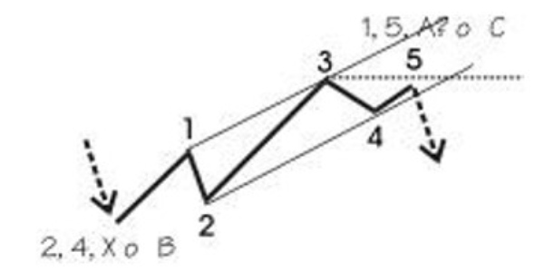
Fallo de la Onda 5.
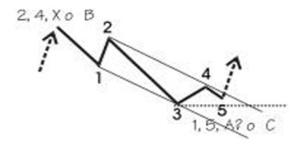
Fallo de la Onda C.
Las Correcciones
Las tendencias muestran la dirección principal de los precios, mientras que las correcciones se mueven en contra de la tendencia. En la terminología de Elliott estos se llaman ondas correctivas.
La formación de ondas de impulso tiene cinco movimientos de precios distintos en contra de la tendencia, los primeros ocurriran en las Ondas (II y IV) y posteriormente en las Ondas (A y C).
La formación de ondas correctivas normalmente tienen tres ondas, en algunos casos cinco o más movimientos distintos de los precios, dos en la dirección de la corrección principal (A y C) y uno en contra (B). Las Ondas 2 y 4 en la imágen de la derecha son correcciones.
Tenga en cuenta que las ondas A y C van en dirección de la tendencia a corto plazo, y por lo tanto son impulsivas y estarán integradas por cinco ondas, como se muestra en la imagen de arriba.
Una formación de ondas de impulso es seguida de una onda correctiva, formando un grado de onda de Elliott, que consiste en la tendencia principal y la tendencia opuesta. Aunque los patrones de la imágen de arriba son alcistas, lo mismo se aplica para los mercados bajistas, donde la tendencia principal es hacia abajo.
siguiente ejemplo muestra la diferencia entre una tendencia (onda de impulso) y una corrección (movimiento de los precios hacia los lados con ondas que se superponen).También muestra que las grandes tendencias consisten en tendencias y correcciones mucho más pequeña, pero el resultado es siempre el mismo.
FOTOS Y EJEMPLOS
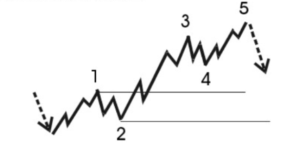
Ondas correctivas.
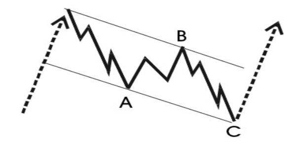
Ondas correctivas.
ONDAS TIPO PLANA
Descripción
Las Planas son formas muy comunes en los patrones de corrección, que en general muestran un sentido lateral. Las ondas A y B de una plana son a su vez un patrón de corrección. La onda C, por el contrario es un patrón impulsivo. Normalmente la onda C no irá más allá del extremo de la onda A.Reglas y normas
- Se compone de 3 ondas.
- La onda C es un impulso, la onda A y B son correctivas.
- La onda B retrocede más del 61,8% de la onda A.
- La onda B a menudo muestra un retroceso completo al final de la onda de impulso anterior.
- La onda C no debe ir más allá del final de la onda A. Normalmente la onda C es al menos igual a la onda A.
¿En qué onda?
Se presentan principalmente en las ondas B, aunque también es bastante común en las ondas 4 y 2.Estructura Interna
Como se mencionó anteriormente, una plana consta de 3 ondas. La estructura interna de estas ondas es 3-3-5. Tanto las ondas A y B son normalmente Zigzag.
FOTOS Y EJEMPLOS
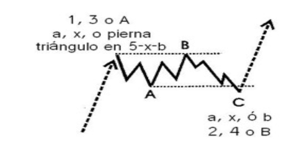
Ondas Planas alcistas.
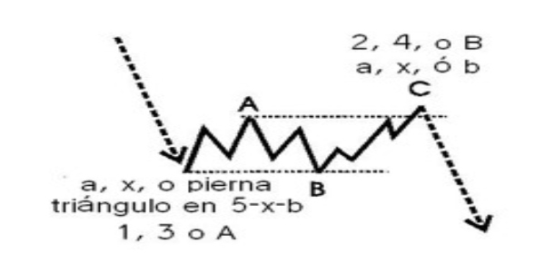
Ondas Planas bajistas.
ONDAS TIPO PLANA - FALLO DE LA ONDA C
Descripción
Este patrón es exactamente el mismo que una plana, excepto por el hecho de que la onda C no llega al final de la onda A y por lo tanto es más corta que la onda B.
FOTOS Y EJEMPLOS
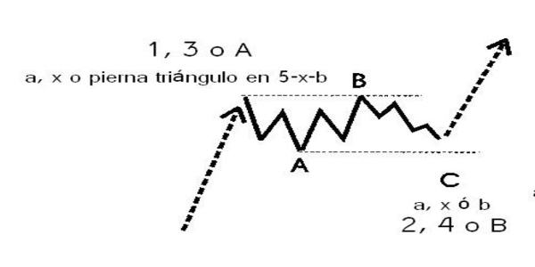
Ondas Planas alcistas con fallo en la Onda C.
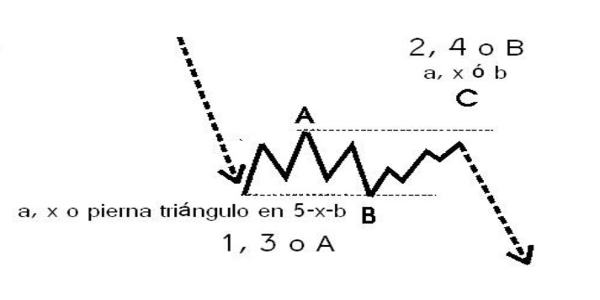
Ondas Planas bajista con fallo en la Onda C.
ONDAS TIPO PLANA EXPANDIDA
Descripción
Este es un tipo especial de plana. Aquí la onda B se extiende y va más allá del final (ortodoxa) de la onda impulsiva anterior. La fuerza de la onda B muestra que el mercado quiere ir en la dirección de B. A menudo una fuerte aceleración se llevará a cabo, lo que inicia una tercera onda o una quinta extendida. Si la onda C es mucho más larga que A, entonces la fuerza será menor.Reglas y normas
- Está compuesta por 3 ondas.
- La onda C es un impulso, las ondas A y B son correctivas.
- La onda B va más allá del final del impulso anterior, que es el comienzo de la onda A. La onda C normalmente es mucho más larga que la onda A.
¿En qué onda?
Este patrón correctivo puede ocurrir en las ondas 2, 4, B y X. Si lo que ocurre en las ondas 2 y C es relativamente corto, normalmente una aceleración en la tercera se llevará a cabo.Estructura Interna
Se compone de cinco ondas, que tienen una estructura interna 3-3-5.
FOTOS Y EJEMPLOS
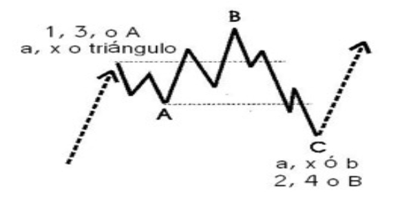
Plana expandida alcista.
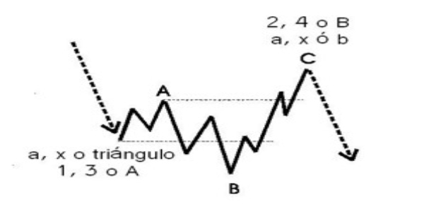
Plana expandida bajista.
ZIGZAGFLAT - Patron Moderno
Descripción
Se trata de un patrón común que es exactamente el mismo que un zigzag, excepto por el hecho de que a la onda B se le permite retroceder más del 61,8% de la onda A.Reglas y normas
- Las normas aplicables son las mismas que se mencionan con otros patrones correctivos.
- La onda C no llegá más allá del extremo de la onda A.
¿En qué onda?
Este patrón correctivo puede ocurrir en las ondas 2, 4, B y X. Si lo que ocurre en las ondas 2 y C es relativamente corto, normalmente una aceleración en la tercera se llevará a cabo.Estructura Interna
Se compone de cinco ondas, que tienen una estructura interna 3-3-5.
FOTOS Y EJEMPLOS
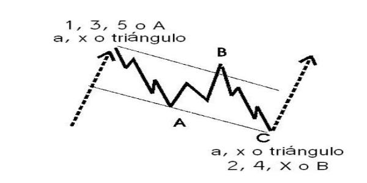
• ZigzagFlat Alcista.
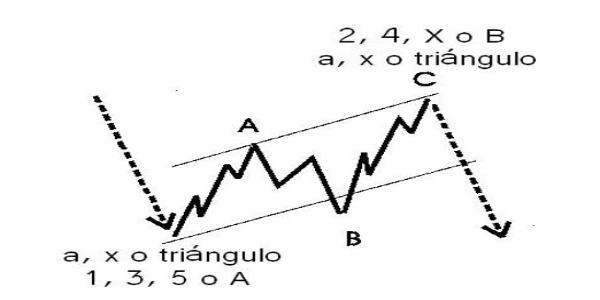
• ZigzagFlat bajista.
ZIGZAG CONTINUO - Patron Moderno
Descripción
Aparte de los Triángulos contractos, una falla en un patrón correctivo ocurre cuando la onda C es más corta que la onda A y no llega más allá del final de la onda A. Esto sucede sobre todo en las correcciones continuas y/o en zigzag. Indica la fuerza en la dirección de la tendencia principal.Reglas y normas
- Las normas aplicables son las mismas que se mencionan con otros patrones correctivos.
- La onda C no llegá más allá del extremo de la onda A.
¿En qué onda?
Los fallos pueden ocurrir en una onda C de la onda 2, en una onda C o E de la onda 4, en una onda C de la onda B o X.
FOTOS Y EJEMPLOS
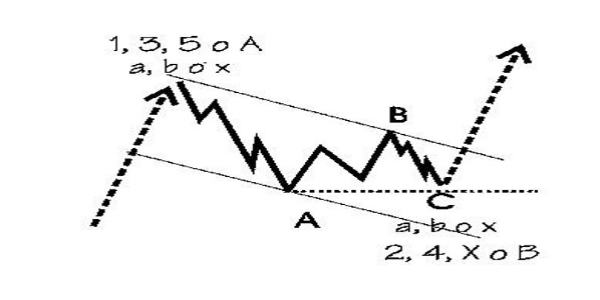
Zigzag Continuo Alcista.
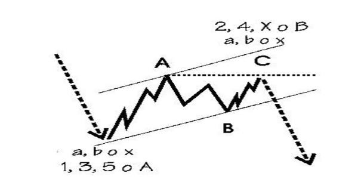
Zigzag Continuo bajista.
TRIANGULOS
Descripción
Un triángulo es un patrón correctivo, el que puede contraerse o expandirse. Además, puede ser ascendente o descendente. Se compone de cinco ondas, cada uno de ellos tiene una naturaleza correctiva.Reglas y normas
- Se compone de 5 ondas.
- La onda 4 y 1 se superponen.
- La onda 4 no puede ir más allá del origen de la onda 3.
- La onda 3 no puede ser la onda más corta.
- Internamente todas las ondas de la diagonal tienen una estructura de ondas correctivas.
- En un triángulo contracto, la onda 1 es la onda más larga y la onda 5 la más corta. En un triángulo expansivo la onda uno es la más corta y la onda cinco la más larga.
- Los triángulos normalmente tienen una forma de cuña, que se deriva de la anterior.
- Como guía de la estructura interna de la onda debe mostrar el resultado de la alternancia.
¿En qué onda?
Los triángulos solo ocurren en las ondas B, X y 4. Nunca en las ondas 2 o A.Estructura Interna
Está compuesto por cinco ondas, de los cuales la estructura interna es 3-3-3-3-3.Objetivos para la onda D y E
Tan pronto como la onda B termine, se puede dibujar una línea de tendencia que conecte el origen de la onda A y el final de la onda B para conseguir un objetivo para la onda D, a condición de que de hecho un triángulo se esté desarrollando. Esto es más cierto luego de la finalización de la onda C.Tan pronto como haya terminado la onda C se puede dibujar una línea de tendencia que conecte la onda A y el final de la onda C para conseguir un objetivo para la onda E. La onda E casi nunca se detiene precisamente en la línea de tendencia, o bien nunca alcanza la línea de tendencia o sobrepasa la línea de tendencia rápida y temporalmente.
FOTOS Y EJEMPLOS
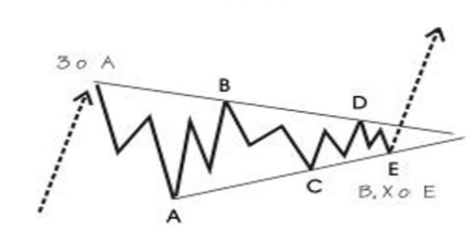
Triangulo correctivo ascendente.
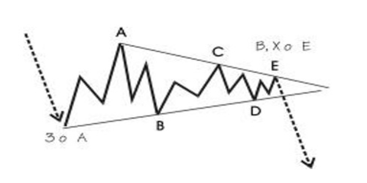
Triangulo correctivo descendente.

Triangulo expandido descendente.
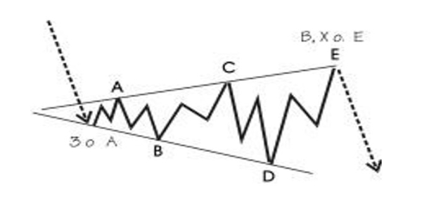
Triangulo expandido descendente.
WXY o COMBINACIONES
Muchos tipos de combinaciones son posibles. A continuación un ejemplo bastante complejo ha sido representado.
Descripción
Es una combinación de varios tipos de correcciones. Estas correcciones se etiquetan como WXY y WXYXZ si es aún más compleja. Empieza por ejemplo con un zigzag (onda W), a continuación una onda X intermedia, una plana (onda Y) y así sucesivamente. Un llamado doble o triple tres es también una combinación, pero este modelo combina planas separadas por ondas X.Reglas y normas
- Todos los tipos de patrones correctivos pueden combinarse para formar un patrón correctivo mayor.
- Las reglas y normas, como se ha mencionado para otros patrones correctivos son aplicables.
- Un triángulo es una combinación que normalmente debe ocurrir al final.
- Los patrones de corrección en una combinación por lo general muestran alternancia.
¿En qué onda?
Por lo general una combinación se produce sobre todo en ondas B, X y 4, es menos común en una onda A y muy raras en la onda 2.Estructura Interna
Por ejemplo, un zigzag, seguido por una plana, seguido de un triángulo tiene la siguiente estructura interna: 5-3-5 (zigzag) -5-3-5 (X) -3-3-5 (Plana) -3-3-3-3-3 (Triángulo).
FOTOS Y EJEMPLOS
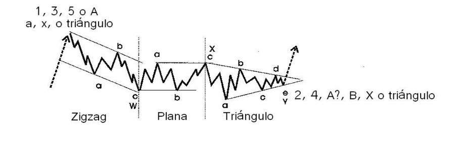
WXY o Combinaciones
PLANA CONTINUA o CORRECCION CONTINUA
Descripción
Una corrección continua es una rara forma de fallo. Este patrón es una especie de Plana, con una onda B alargada y una onda C muy pequeña. De acuerdo a la teoría, la onda C debe ser tan corta que no llegue al territorio de precios de la onda A. ELWAVE no hace una excepción de una onda C que no alcanza el territorio de precios de la onda A.En lugar de una corrección continua esta podría ser en teoría una extensión de una onda impulsiva, donde se ha subdividido la onda en dos (o más) series 1,2. Si la onda B es una clara onda tres, entonces es una extensión, de lo contrario una corrección continua. En la práctica no habrá ninguna diferencia en la dirección del mercado: en ambos supuestos, el mercado va a explotar en la dirección de la onda B, por lo tanto ELWAVE prefiere etiquetarla como una extensión. Por motivos de exactitud se ha incluido este patrón y se ha implementado en las REGLAS CLASICAS, no en las REGLAS MODERNAS.
Reglas y normas
- La onda B se compone de tres ondas.
- La onda C se compone de cinco ondas.
- La onda C debe ser mucho más corta y normalmente no llega al territorio de precios de la onda A.
- La onda C no debe retroceder más del 100% de la onda B, pero debe ser mayor al 60% de la onda A.
¿En qué onda?
La mayoría de las veces debe ocurrir en las ondas 2 o B.Estructura Interna
Es una estructura de tres ondas. La estructura interna es 3-3-5.
FOTOS Y EJEMPLOS
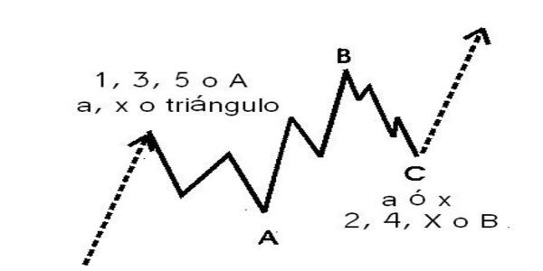
Plana continua alcista
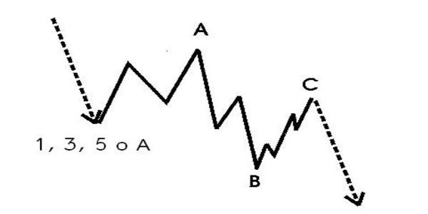
Plana continua bajista
PLANA CONTINUA o CORRECCION CONTINUA - MODERNA
Descripción
Este patrón es exactamente igual a una corrección continua, excepto por el hecho de que debe retroceder más del 60%, si no es así ELWAVE considera que es una corrección continua normal. Esta distinción es necesaria, porque normalmente una corrección continua es poco frecuente. Pero si se retrasa más del 60% y sigue sin llegar al final de la onda A, de repente se convierte en un patrón de ocurrencia mucho más probable. En cuyo caso obtendrá una puntuación mucho más alta.
FOTOS Y EJEMPLOS
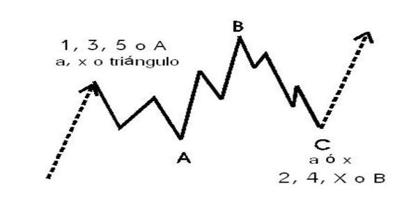
Plana continua alcista MODERNA
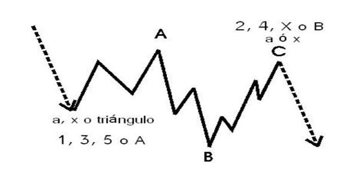
Plana continua bajista MODERNA
Ratios Fibonacci
La serie Fibonacci es una secuencia matemática en el que un número es la suma de los dos números anteriores. La secuencia es la siguiente: 1, 1, 2, 3, 5, 8, 13, 21, 34, 55, 89, 144 y así sucesivamente. Las propiedades de esta secuencia aparecen en toda la naturaleza y también en las artes y las ciencias. Lo más notable es el cociente 1.618, la "Proporción Dorada", es muy común, una relación que ya fue descubierta en la antigüedad. Este número puede ser abordado por la división de un número Fibonacci por su número precedente, la secuencia se extiende hasta el infinito.
Además, las proporciones 0,618, que es el inverso de 1.618 son muy importantes cuando se analizan las relaciones Fibonacci. Elliott no descubrió las relaciones Fibonacci por sí mismo, pero esta fue puesta en conocimiento de Elliott por Charles Collins.
Cuenta de la onda de los patrones impulsivos y correctivos:
El análisis de las relaciones Fibonacci entre movimientos de precios es muy importante por varias razones. En primer lugar usted puede controlar su análisis de la onda. Cuanto mejor sea la relación Fibonacci de su recuento de onda, más preciso será el conteo, esto es porque de una manera u otra, todas las ondas están relacionadas entre sí. En segundo lugar se pueden proyectar objetivos realistas, una vez que haya definido la cuenta de la onda correctamente o que se hayan distinguido diferentes escenarios, que apuntan en la misma dirección.
Dado que los ratios Fibonacci se manifiestan en las proporciones de una onda a otra, las ondas suelen estar relacionadas entre sí por las relaciones 2.618, 1.618, 1, 0.618,0.382 y 0.236. Este hecho puede ayudar en la estimación de precios objetivos para la expectativa de la onda.
Si, por ejemplo, una onda 1 o A, de cualquier grado (o marco de tiempo) se ha completado, se puede proyectar retrocesos del 0,382, 0,50 y 0,618 para la onda 2 o B, que le dan sus objetivos. La mayoría de las veces la tercera onda es la más fuerte, por lo que a menudo se encuentra que la onda 3 es aproximadamente 1.618 veces la longitud de la onda 1. La onda 4 normalmente muestra un retroceso, que es menor que el de la onda 2, como 0.236 o 0.382. Si la onda tres es la onda más larga, la relación entre la onda 5 y 3 es a menudo de 0.618. También la onda 5 es igual a la onda 1 la mayor parte del tiempo.
Las mismas relaciones se pueden encontrar entre las ondas A y C. Normalmente C es igual a A o es 1.618 veces la longitud de A. Incluso se podrían combinar las ondas para encontrar zonas de soporte y resistencia. Por ejemplo, el movimiento del precio neto de la onda 1 y 3 es 0.618 veces, creando otro objetivo interesante para la onda 5.
Vale la pena experimentar mucho con su cuenta de la onda, Fibonacci le ayudará a resolver el ritmo de los mercados.
ONDA 1
Onda (I): La onda (I) raramente manifiesta su intención, son pocos los que la identifican.El inicio de la Onda (I), final de la onda 5 (bajista), vista desde Wyckoff se identifica como el (Spring) una penetración del precio en mininos en una zona de soporte dentro de un rango lateral, esos mínimos o soporte es una de las zonas primaria, llamada "SC" que rápidamente se da la vuelta y retorna al rango del cual salió.
Es un claro ejemplo de ‘trampa bajista’ porque el hecho de atravesar el soporte parece una señal de que la oferta tiene el control de nuevo de la tendencia bajista. Siendo la entrada fuerte de la demanda la que impulsa de nuevo el precio al alza con rangos y volúmenes relativamente altos, esto nos proporciona un rally a la parte alta del rango (Trading ranges).
Objetivos para la onda 1:
La primera onda, un nuevo movimiento impulsivo de los precios, tiende a detenerse en la base de la corrección anterior, que normalmente es la onda B. Esto a menudo coincide con un 38,2% o un retroceso del 61,8% de la corrección anterior.

PATRONES DE TENDENCIA EN ONDA 1
Triángulo Diagonal tipo 2. Diagonal de inicio.
La Diagonal tipo 2 es una especie de patrón impulsivo, que normalmente se produce en la onda 1 o en la onda A. La principal diferencia con el tipo de Triángulo Diagonal 1 es el hecho de que las ondas 1, 3 y 5 tienen una estructura ¡interna de cinco ondas en lugar de tres. La experiencia demuestra que también puede ocurrir en una onda 5 o C, aunque el principio de la onda de Elliott no lo permite. No confundir con los triángulos correctivos . Las Diagonales son fenómenos relativamente raros en los grandes grados de onda, pero se producen a menudo en grados de onda más pequeñas en gráficos intrdía. Estos triángulos diagonales no son seguidos por un cambio violento en la dirección del mercado, ya que no es el final de una tendencia, excepto cuando ocurren en una onda quinta o una onda C Las reglas y normas más importantes son:
- Estan compuestas por 5 ondas.
- La onda 4 y 1 se Superponen.
- La onda 4 no puede ir más allá del origen de la onda 3.
- La onda 3 no puede ser la onda más corta.
- Las ondas internas 1, 3 y 5 tienen una estructura de onda impulsiva.
- La onda 1 es la más larga de las ondas y la onda 5 la más corta.
- Como guía de la estructura interna de la onda debe mostrar el resultado de la alternancia, lo que significa que las ondas 2 y 4 muestren un tipo diferente de estructura correctiva.
ONDA 2
Onda (II): Retroceden gran parte de la onda (I) entre el 50% y el 61.8 incluso mas. todos los retrocesos son matices y siempre teniendo en cuenta la dilatación del precio por noticias o eventos del momento que no controla el mercado.Wyckoff lo denomina (Back) retroceso del arroyo donde vemos una reducción en el volumen en el retroceso del precio.
La recuperación del precio a la zona perforada confirmar que la zona antes resistencia ahora es soporte y confirmar la tendencia alcista después de salir de la zona (trading ranges).
Objetivos para la onda 2
La onda 2 se retrasa al menos un 38,2% pero la mayoría de las veces el 61,8% o más de la onda 1. A menudo se detiene en la sub onda 4 y con mayor frecuencia en la sub onda 2 previa a la onda 1.Un retroceso de más del 76% es altamente sospechoso, aunque todavía no se rompa ninguna regla.
ONDA 3
Onda (III): Es la Onda considerada la mas fuertes, nunca puede ser la onda impulsiva más corta (con respecto a la onda 1 y 5). Su inicio es la que cierra el proceso de acumulación y marca una clara tendencia alcista y la que en su final podemos ver los Climax de compras o marca el (BC) de Wyckoff, siempre y cuando no tengamos una onda 5 extendida.La Onda (III) se sub-divide en 5 Sub-ondas 3-1, 3-2, 3-3, 3-4, 3-5:
La ondas siguen los mismos principios que el resto de ondas de Grado mayor, siendo las mas importantes las ondas 3-3, 3-4, 3-5 ya que coinciden en los inicios de los procesos de distribución y donde podemos encontrar en su onda 3-3 el (PSY) de Wyckoff.
Objetivos para la onda 3
La onda 3 es al menos igual a la onda 1, a excepción de un triángulo. Si la onda 3 es la onda más larga tenderá a ser el 161% de la onda 1 o incluso el 261%.
ONDA 4
Onda IV: Son más predecibles por la ley de la alternancia (debe diferir en complejidad), y signos sutiles de debilidad donde la oferta tiene el control.Entre el final de la onda (III) y la onda (IV), se marcan zonas primarias, (BC) , (AR) y (SOW) de Wyckoff cerrando la zona trading ranges de distribución.
Objetivos para la onda 4
La onda 4 se retrasa al menos un 23% de la onda 3, pero más a menudo llega a un retroceso del 38,2%. Normalmente alcanza el territorio de la sub onda 4 de la tercera onda anterior.
En los mercados muy fuertes la onda 4 sólo se retrasa el 14% de la onda 3.
PATRONES DE TENDENCIA EN ONDA 4
Triángulo Diagonal tipo 1. Pauta Terminal.
Las diagonales son una especie de patrones impulsivos que normalmente se producen en pautas terminales como una onda
4. Las diagonales son fenómenos relativamente raros en los grandes grados de onda, pero se producen a menudo en grados de onda más pequeñas en los gráficos intradía. Por lo general, un Triángulo Diagonal viene seguido de un violento cambio en la dirección del mercado, representado por una Onda 5 de impulso.
Las reglas y normas más importantes son:
- Estan compuestas por 5 ondas.
- La onda 3 no puede ser la onda más corta.
- Internamente todas las ondas de la diagonal tienen una estructura de ondas correctivas.
- Las lineas diagonales del canal deben converger
- Como guía de la estructura de la onda interna debe mostrar el resultado de la alternancia, lo que significa diferentes tipos de estructuras correctivas.
ONDA 5
Onda (V): Puede ser extendida (normalmente no), aquí vemos optimismo alto acompañado de noticias buenas, son ondas lentas y reflejan el posible cambio, aquí podemos encontramos con las famosas trampas de mercado UT o UTAD.Objetivos para la onda 5
Normalmente la onda 5 es igual a la onda 1, o recorre una distancia del 61,8% de la longitud de la onda 1. También podría tener las mismas relaciones de la onda 3 o podría recorrer el 61,8% de la longitud de las ondas 1 y 3 en su conjunto. Si la onda 5 es la onda extendida, la mayor parte será el 161,8% de la onda 3 ó el 161,8% de la longitud de las ondas 1 y 3 en su conjunto.
PATRONES DE TENDENCIA EN ONDA 5
Triángulo Diagonal tipo 1. Pauta Terminal.
Las diagonales son una especie de patrones impulsivos que normalmente se producen en pautas terminales como una onda
5. Las diagonales son fenómenos relativamente raros en los grandes grados de onda, pero se producen a menudo en grados de onda más pequeñas en los gráficos intradía. Por lo general, un Triángulo Diagonal viene seguido de un violento cambio en la dirección del mercado, representado por una Onda A de correccion.
Las reglas y normas más importantes son:
- Estan compuestas por 5 ondas.
- Las ondas 4 y 1 se superponen.
- La onda 4 no puede ir más alá del origen de la onda 3.
- La onda 3 no puede ser la onda más corta.
- Internamente todas las ondas de la diagonal tienen una estructura de ondas correctivas.
- La onda 1 es la onda más larga y la onda 5 la más corta.
- Las lineas diagonales del canal deben converger
- Como guía de la estructura de la onda interna debe mostrar el resultado de la alternancia, lo que significa diferentes tipos de estructuras correctivas.
Estructura interna: La estructura interna de las cinco ondas es 3-3-3-3-3.
PATRONES DE TENDENCIAS: FALLO EN ONDA 5 .
Un fallo es un patrón impulsivo en el que la quinta onda no excede a la tercera onda. Las quintas ondas, que viajan ligeramente más allá de la parte superior de la onda 3, también se pueden clasificar como una especie de fallo. Indica que la tendencia es débil y que el mercado mostrará una aceleración en la dirección opuesta.Las reglas y normas más importantes son:
- La onda 2 no puede ser más larga en precios que la distancia recorrida por la onda 1, por lo que no debe ir más allá del origen de la onda 1.
- La onda 3 nunca es la más corta en comparación con las ondas 1 y 5.
- La onda 4 no se puede superponer a la onda 1, a excepción del triángulo diagonal y, a veces en las ondas 1 o A, pero nunca en una tercera onda. No debe haber superposición entre las ondas 1 y A.
- La onda 5 no va más allá del final de la onda 3.
- Como guía, la tercera onda muestra el mayor impulso.
- Como guía de la estructura interna de la onda debe mostrar el resultado de la alternancia, lo que significa que debe haber diferentes tipos de estructuras correctivas.
Este tipo de Onda puede relacionarse visualmente con el doble techo o doble suelo que describen los gafos del chartismo clasico.